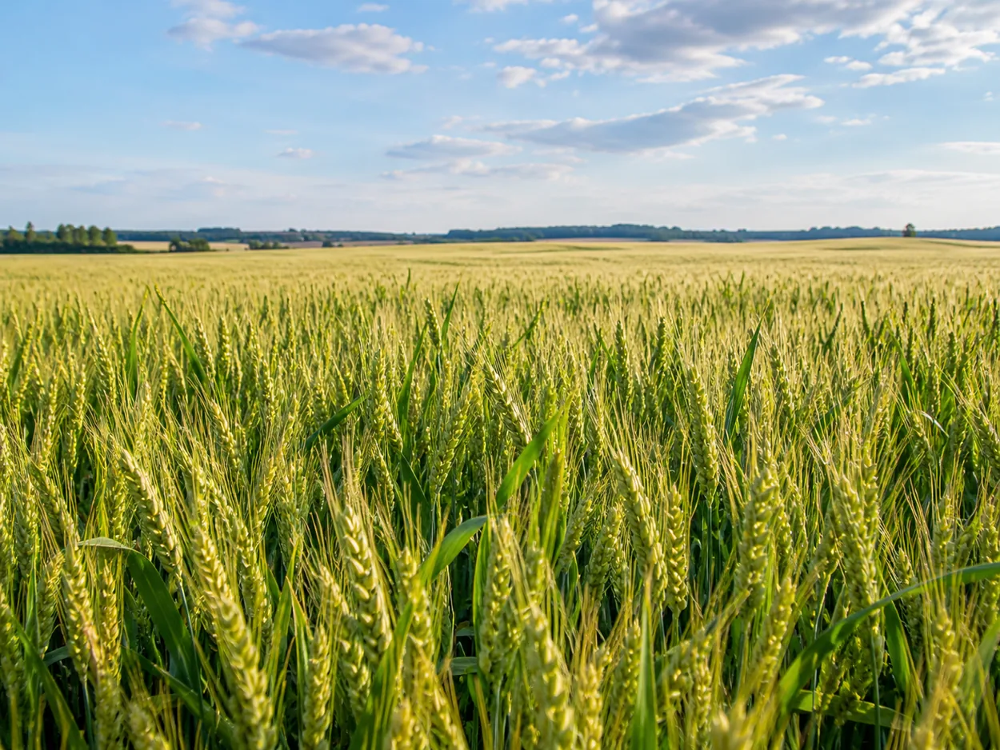
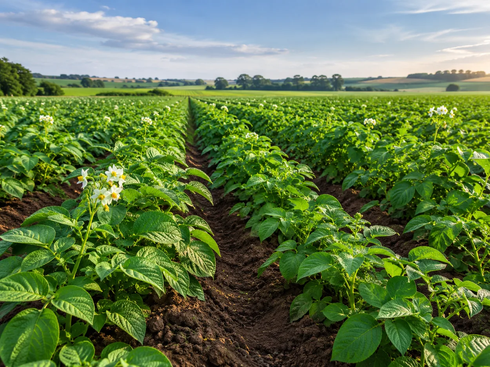

✳ FROM ORBIT TO THE FIELD EARTH DATA / FARM CONTEXT
The fieldcollection.
A fresh view of farming decisions. Meet the crops, discover the seasons, and explore crop rotation trade-offs using transparent climate science.
04
CROPS IN THE PROTOTYPE
ONE EXPLAINABLE DECISION TOOL
ONE EXPLAINABLE DECISION TOOL



SCROLL TO EXPLORE↓Representative photography · See source credits in the Studio
The land is unique.
So is every choice.
AgriShift explores possible crop rotations by bringing historical NASA POWER climate records together with FAO-56 crop water calculations and the constraints a farmer actually knows.
TRANSPARENT METHODOLOGYNO UNVERIFIED YIELD CLAIMS2025 HISTORICAL PILOT
02 / FIELD COLLECTION
Meet the four.
Real photographic references for the crops supported by the current prototype.
01 / WINTERWheatDiscover ↗

02 / WINTERFaba beanDiscover ↗

03 / SUMMERMaizeDiscover ↗
04 / SUMMERSunflowerDiscover ↗
See the full crop collection ↗
Bundled field visuals are for interface storytelling and are not farm-specific imagery.
03 / YOUR NEXT GROWING SEASONExplore the
Explore the
possibilities.
Input your water budget and farm constraints. Compare modeled rotation pathways, not promises of future yields.
Launch the decision studio ↗NASA POWER→FAO-56→ROTATION SCREENING